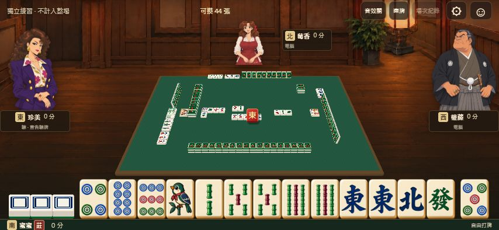
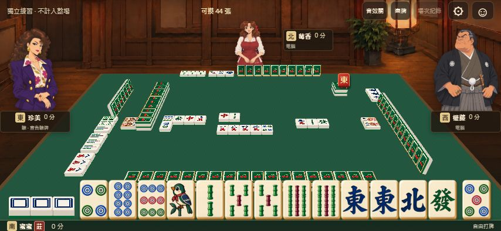

<!doctype html><html lang="zh-Hant"><meta charset="utf-8"><meta name="viewport" content="width=device-width,initial-scale=1"><title>v0.22草圖與桌面比例修正核對</title><style>body{margin:0;background:#181c18;color:#f1e6cf;font:15px system-ui}header{padding:16px 22px}main{padding:0 20px 24px;display:grid;grid-template-columns:repeat(2,minmax(0,1fr));gap:18px}figure{margin:0}img{display:block;width:100%;height:auto}figcaption{padding:9px 0;font-size:13px}a{color:#f7d69c}.full{grid-column:1/-1}p{margin:6px 0;line-height:1.5}@media(max-width:700px){main{grid-template-columns:1fr}.full{grid-column:auto}}</style><header><b>桌面比例修正｜草圖核對</b><p>依已接受的v0.22前景構圖：桌子延伸至下緣、角色留在桌外、自家手牌接近桌沿。</p><p>草圖只比較構圖；角色、牌面和牌數依既有素材與引擎。</p><a href="/?scene=normal&amp;case=layout-review&amp;auto=1">操作v0.35</a></header><main><figure><figcaption>3. 修正前 v0.34：桌面縮在中央，手牌與桌子之間留出桌外背景。</figcaption></figure><figure><figcaption>4. 修正後 v0.35：牌桌前景延伸到手牌背後，桌上的牌一同放大。</figcaption></figure></main></html>
